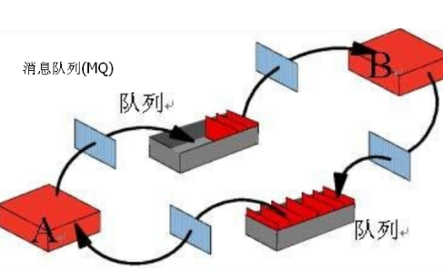
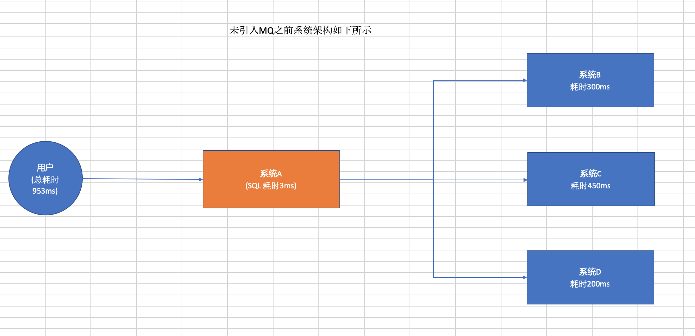
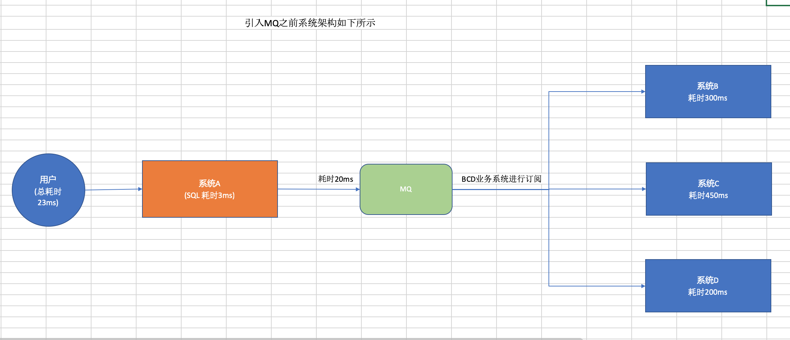
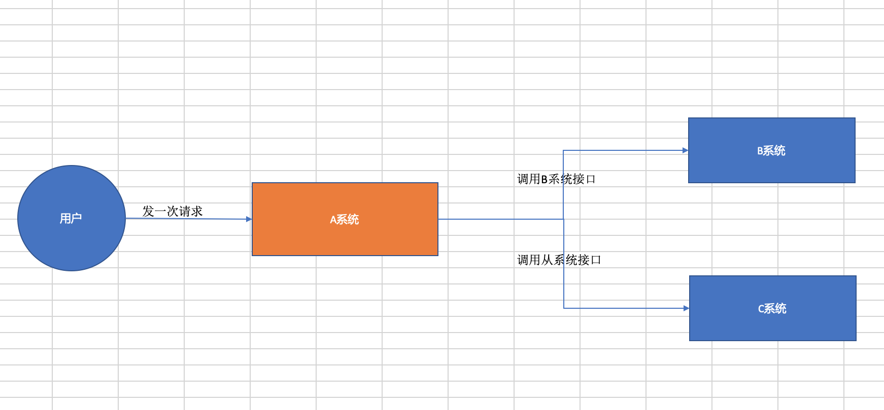
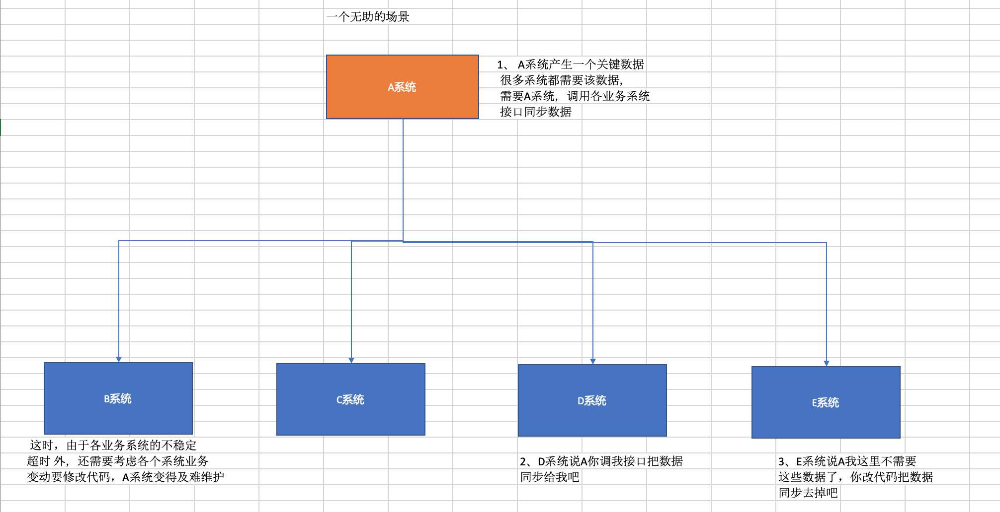
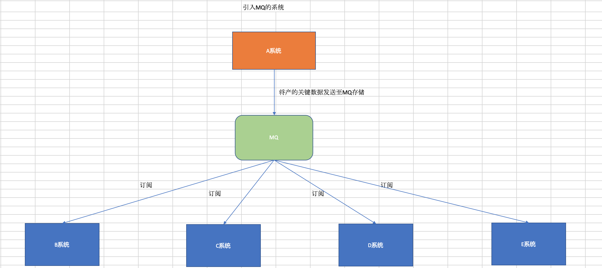
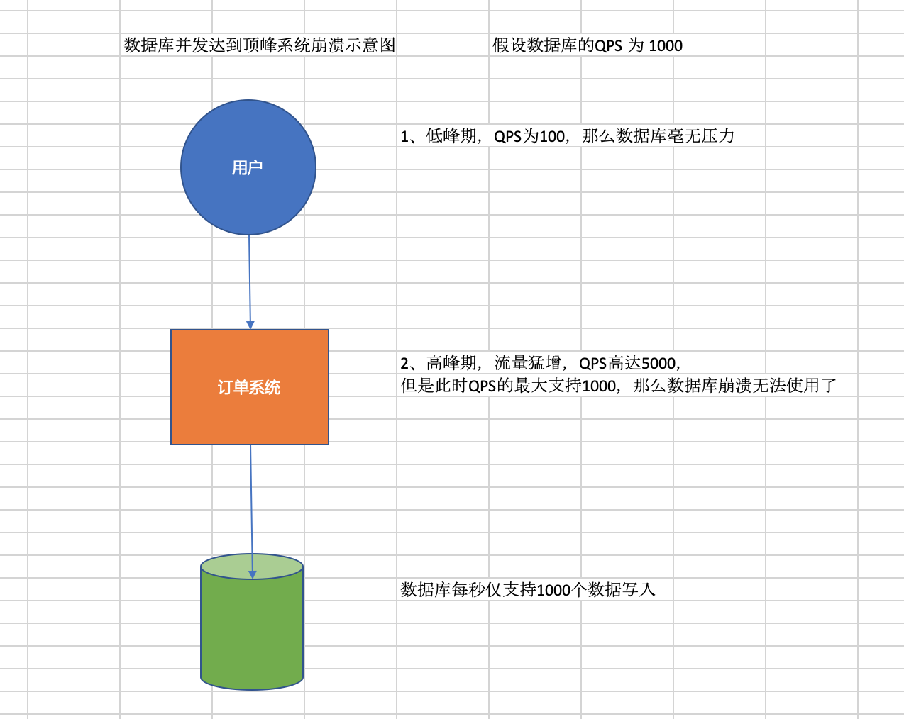
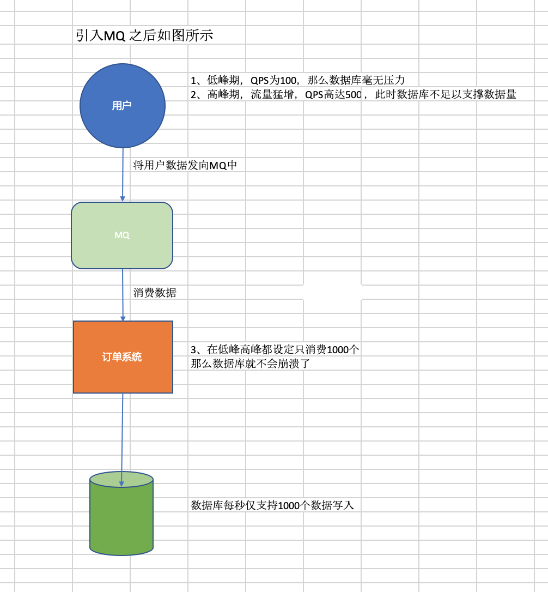
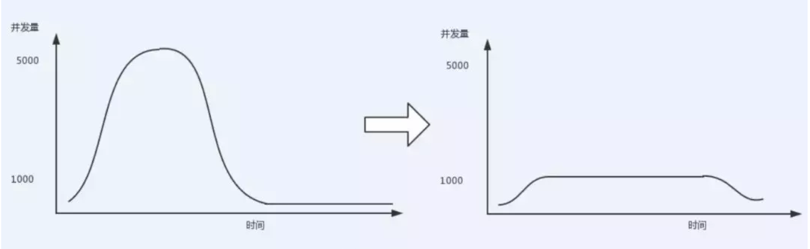

什么是MQ?
消息队列(MQ)，是一种应用程序对应用程序的通信方法。应用程序通过写和检索出入列队的针对应用程序的数据(消息)来通信，而无需专用连接来链接它们。
消息传递指的是程序之间通过在消息中发送数据进行通信，而不是通过直接调用彼此来通信，直接调用通常是用于诸如远程过程调用的技术。排队指的是应用程序通过队列来通信。队列的使用除去了接收和发送应用程序同时执行的要。

扩展资料：
MQ传递主干，在世界屡获殊荣。 它帮您搭建企业服务总线(ESB)的基础传输层。IBM WebSphere MQ为SOA提供可靠的消息传递。它为经过验证的消息传递主干， 全方位、 多用途的数据传输， 并帮助您搭建企业服务总线的传输基础设施。
IBM WebSphere MQ 支持两种不同的应用程序编程接口：Java 消息服务（JMS）和消息队列接口（MQI）。在 IBM WebSphere MQ 服务器上，JMS 绑定方式被映射到 MQI。
概述
大家平时也有用到一些消息中间件(MQ)，但是对其理解可能仅停留在会使用API能实现生产消息、消费消息就完事了。
对MQ更加深入的问题，可能很多人没怎么思考过。
那么我们从以下几个问题来深入了解MQ:
1.为什么要使用MQ？
2.使用了MQ之后有什么优缺点？
3.怎么保证MQ消息不丢失？
4.怎么保证MQ的高可用性？
本文将通过一些场景，配合着通俗易懂的语言和多张手绘彩图，讨论一下这些问题
为什么要使用MQ？
相信大家都听说过这样的一句话： 好的架构不是设计出来的，是演进出来的。
这句话在引入MQ的场景同样适用，适用MQ必定有其道理，是用用来解决实际问题的，而不是看见别人用了，也跟着用，要知其然知其所以然。
其实适用MQ的场景有很多，但是比较核心的以下3个：
- 异步
- 解耦
- 削峰填谷
异步
我们通过实际案列进行说明：假设A系统接收一个请求，需要在自己本地写库操作执行SQL,但是在其之前需要调用BCD 三个业务系统的接口，进行业务处理；
假设本地写库的实际需要3ms，调用用BCD三个业务系统业务处理分别需要 300ms 、 450ms 、 200ms，
那么最终请求总延时为： 3+300+450+200=953ms ，接近1s,这就可能会影响用户的体验性了，从而造成不必要的结果。
此时整个系统同大致架构是这样的

但是一旦使用了MQ之后，系统A只需要发送3条消息到MQ中的3个消息队列，然后就返回给用户了。
假设发送消息到MQ中耗时20ms，那么用户感知到这个接口的耗时仅仅是20 + 3 = 23ms，用户几乎无感知，倍儿爽！
那么他的系统架构图是怎么样的呢？是的就是像下面所示

由以上图可知，使用MQ后，接口的性能大大提高，用户几乎无感知，倍儿爽
解耦
假设A系统在用户发生某个操作的时候，需要把用户提交的数据同时推送到B、C两个系统的时候。
这个时候负责A系统的哥们想：没事啊，B、C两个系统给我提供一个Http接口或者RPC接口，我把数据推送过去不就完事了吗。负责A系统的哥们美滋滋。
一切看起来很美好，但是随着业务快速迭代，这个时候系统D也想要这个数据。那既然这样，A系统的开发同学就改咯，在发送数据给BC的同时加上一个D。

但是，随着所需订阅消息业务系统越来越多，有些系统需要该信息，有些系统又不需要该信息，越到后面越发现，麻烦来了。。。
整个系统好像不止这个数据要发送给BCD、还有第二、第三个数据要发送给BCD。甚至有时候又加入了E、F等等系统，他们也要这个数据。
并且有时候可能B系统突然又不要这个数据了，A系统该来改去，A系统的开发哥们头皮发麻。
更复杂的场景是，数据通过接口传给其他系统有时候还要考虑重试、超时等一些异常情况，真是头发都白了呀。。。

这个时候，就该我们的MQ粉墨登场了！
这种情况下使用MQ来解耦是在合适不过了，A系统只需要将关键信息丢到MQ中，其他系统进行订阅即可。
就算某个系统不需要这个数据了，也不会需要A系统改动代码。
看看加入MQ解耦的下图，是不是清爽了很多！

削峰填谷
举个例子，比如我们的订单系统，在下单的时候就会往数据库写数据。但是数据库只能支撑每秒1000左右的并发写入，并发量再高就容易宕机。
低峰期的时候并发也就100多个，但是在高峰期时候，并发量会突然激增到5000以上，这个时候数据库肯定死了。
如下图，来感受一下数据库崩溃了，绝望了吧：

但是使用了MQ之后，情况就变了！
消息被MQ保存起来了，然后系统就可以按照自己的消费能力来消费，比如每秒1000个数据，这样慢慢写入数据库，这样就不至于崩溃了：
整个过程，如下图所示：

至于为什么叫做削峰填谷呢?来看看这个图：

因为如果没有用MQ的情况下，并发量高峰期的时候是有一个“顶峰”的，然后高峰期过后又是一个低并发的“谷”。
但是使用了MQ之后，限制消费消息的速度为1000，但是这样一来，高峰期产生的数据势必会被积压在MQ中，高峰就被“削”掉了。
消息会存在生产太快，消费过慢，导致积压，在高峰期过后的一段时间内，消费消息的速度还是会维持在1000QPS，直到消费完积压的消息,这就叫做“填谷”
通过上面的分析，大家就可以知道为什么要使用MQ，以及使用了MQ有什么好处。知其所以然，明白了自己的系统为什么要使用MQ。
使用了MQ之后有什么优缺点？
看到这个问题蒙圈了，用了就用了嘛！优点上面已经说了，但是这个缺点是啥啊。好像没啥缺点啊。
如果你这样想，就大错特错了，在设计系统的过程中，除了要清楚的知道为什么要用这个东西，还要思考一下用了之后有什么坏处。这样才能心里有底，防范于未然。
接下来我们就讨论一下，用MQ会有什么缺点把？
1.系统可用性降低
大家想想一下，上面的说解耦的场景，本来A系统的哥们要把系统关键数据发送给BC系统的，现在突然加入了一个MQ了，现在BC系统接收数据要通过MQ来接收。
但是大家有没有考虑过一个问题，万一MQ挂了怎么办？这就引出一个问题，加入了MQ之后，系统的可用性是不是就降低了？
因为多了一个风险因素：MQ可能会挂掉。只要MQ挂了，数据没了，系统运行就不对了。
2.系统复杂度提高
本来我的系统通过接口调用一下就能完事的，但是加入一个MQ之后，需要考虑消息重复消费、消息丢失、甚至消息顺序性的问题
为了解决这些问题，又需要引入很多复杂的机制，这样一来是不是系统的复杂度提高了。
3.数据一致性问题
本来好好的，A系统调用BC系统接口，如果BC系统出错了，会抛出异常，返回给A系统让A系统知道，这样的话就可以做回滚操作了
但是使用了MQ之后，A系统发送完消息就完事了，认为成功了。而刚好C系统写数据库的时候失败了，但是A认为C已经成功了？这样一来数据就不一致了。
通过分析引入MQ的优缺点之后，就明白了使用MQ有很多优点，但是会发现它带来的缺点又会需要你做各种额外的系统设计来弥补
最后你可能会发现整个系统复杂了好几倍，所以设计系统的时候要基于这些考虑做出取舍，很多时候你会发现该用的还是要用的。。。
怎么保证MQ消息不丢失？
使用了MQ之后，还要关心消息丢失的问题。这里我们挑RabbitMQ来说明一下吧。
生产者弄丢了数据
RabbitMQ生产者将数据发送到rabbitmq的时候,可能数据在网络传输中搞丢了，这个时候RabbitMQ收不到消息，消息就丢了。
RabbitMQ提供了两种方式来解决这个问题：
事务方式：
在生产者发送消息之前，通过channel.txSelect开启一个事务，接着发送消息
如果消息没有成功被RabbitMQ接收到，生产者会收到异常，此时就可以进行事务回滚channel.txRollback然后重新发送。假如RabbitMQ收到了这个消息，就可以提交事务channel.txCommit。 但是这样一来，生产者的吞吐量和性能都会降低很多，现在一般不这么干。
另外一种方式就是通过confirm机制：
这个confirm模式是在生产者哪里设置的，就是每次写消息的时候会分配一个唯一的id，然后RabbitMQ收到之后会回传一个ack，告诉生产者这个消息ok了。
如果rabbitmq没有处理到这个消息，那么就回调一个nack的接口，这个时候生产者就可以重发。
注：事务机制和cnofirm机制最大的不同在于事务机制是同步的，提交一个事务之后会阻塞在那儿
但是confirm机制是异步的，发送一个消息之后就可以发送下一个消息，然后那个消息rabbitmq接收了之后会异步回调你一个接口通知你这个消息接收到了。
所以一般在生产者这块避免数据丢失，都是用confirm机制的。
Rabbitmq弄丢了数据
RabbitMQ集群也会弄丢消息，这个问题在官方文档的教程中也提到过，就是说在消息发送到RabbitMQ之后，默认是没有落地磁盘的，万一RabbitMQ宕机了，这个时候消息就丢失了。
所以为了解决这个问题，RabbitMQ提供了一个持久化的机制，消息写入之后会持久化到磁盘
这样哪怕是宕机了，恢复之后也会自动恢复之前存储的数据，这样的机制可以确保消息不会丢失。
设置持久化有两个步骤：
第一个是创建queue的时候将其设置为持久化的，这样就可以保证rabbitmq持久化queue的元数据，但是不会持久化queue里的数据
第二个是发送消息的时候将消息的deliveryMode设置为2，就是将消息设置为持久化的，此时rabbitmq就会将消息持久化到磁盘上去。
但是这样一来可能会有人说：万一消息发送到RabbitMQ之后，还没来得及持久化到磁盘就挂掉了，数据也丢失了，怎么办？
对于这个问题，其实是配合上面的confirm机制一起来保证的，就是在消息持久化到磁盘之后才会给生产者发送ack消息。
万一真的遇到了那种极端的情况，生产者是可以感知到的，此时生产者可以通过重试发送消息给别的RabbitMQ节点
消费端弄丢了数据
RabbitMQ消费端弄丢了数据的情况是这样的：在消费消息的时候，刚拿到消息，结果进程挂了，这个时候RabbitMQ就会认为你已经消费成功了，这条数据就丢了。
对于这个问题，要先说明一下RabbitMQ消费消息的机制：
在消费者收到消息的时候，会发送一个ack给RabbitMQ，告诉RabbitMQ这条消息被消费到了，这样RabbitMQ就会把消息删除。
但是默认情况下这个发送ack的操作是自动提交的，也就是说消费者一收到这个消息就会自动返回ack给RabbitMQ，所以会出现丢消息的问题。
所以针对这个问题的解决方案就是：
关闭RabbitMQ消费者的自动提交ack,在消费者处理完这条消息之后再手动提交ack。
这样即使遇到了上面的情况，RabbitMQ也不会把这条消息删除，会在你程序重启之后，重新下发这条消息过来。
怎么保证MQ的高可用性性？
使用了MQ之后，我们肯定是希望MQ有高可用特性，因为不可能接受机器宕机了，就无法收发消息的情况。
这一块我们也是基于RabbitMQ这种经典的MQ来说明一下：
RabbitMQ是比较有代表性的，因为是基于主从做高可用性的，我们就以他为例子讲解第一种MQ的高可用性怎么实现。
rabbitmq有三种模式：
- 单机模式
- 普通集群模式
- 镜像集群模式
单机模式
单机模式就是demo级别的，就是说只有一台机器部署了一个RabbitMQ程序。
这个会存在单点问题，宕机就玩完了，没什么高可用性可言。一般就是你本地启动了玩玩儿的，没人生产用单机模式。
普通集群模式
这个模式的意思就是在多台机器上启动多个rabbitmq实例。类似的master-slave模式一样。
但是创建的queue，只会放在一个master rabbtimq实例上，其他实例都同步那个接收消息的RabbitMQ元数据。
在消费消息的时候，如果你连接到的RabbitMQ实例不是存放Queue数据的实例，这个时候RabbitMQ就会从存放Queue数据的实例上拉取数据，然后返回给客户端。
总的来说，这种方式有点麻烦，没有做到真正的分布式，每次消费者连接一个实例后拉取数据，如果连接到不是存放queue数据的实例，这个时候会造成额外的性能开销。
如果从放Queue的实例拉取，会导致单实例性能瓶颈。
如果放queue的实例宕机了，会导致其他实例无法拉取数据，这个集群都无法消费消息了，没有做到真正的高可用。
所以这个事儿就比较尴尬了，这就没有什么所谓的高可用性可言了，这方案主要是（提高吞吐量的），就是说让集群中多个节点来服务某个queue的读写操作。
镜像集群模式
镜像集群模式才是真正的rabbitmq的高可用模式，跟普通集群模式不一样的是：
创建的queue无论元数据还是queue里的消息都会存在于多个实例上，
每次写消息到queue的时候，都会自动把消息到多个实例的queue里进行消息同步。
这样的话任何一个机器宕机了别的实例都可以用提供服务，这样就做到了真正的高可用了。
注：但是也存在着不好之处：
性能开销过高，消息需要同步所有机器，会导致网络带宽压力和消耗很重
扩展性低：无法解决某个queue数据量特别大的情况，导致queue无法线性拓展。
就算加了机器，那个机器也会包含queue的所有数据，queue的数据没有做到分布式存储。
对于RabbitMQ的高可用一般的做法都是开启镜像集群模式，这样起码来说做到了高可用，一个节点宕机了，其他节点可以继续提供服务。
总结
通过本篇文章，分析了对于MQ的一些常规问题：
为什么使用MQ？
1.异步，提高系统的性能
2.解耦，各业务系统解耦，避免不必要的业务耦合牵扯
3.削峰填谷，为了避免高峰流量过大，导致系统崩溃，从而将用户数据放入MQ，以一定的消费能力进行消费
使用MQ有什么优缺点
缺点：
1.系统的可用性降低了，MQ挂掉怎么办，那么此时业务系统数据就不一致了
2.系统变复杂了，本来我的系统通过接口调用一下就能完事的，但是加入一个MQ之后，需要考虑消息重复消费、消息丢失、甚至消息顺序性的问题为了解决这些问题，
又需要引入很多复杂的机制，这样一来是不是系统的复杂度提高了。
3.数据一致性问题
如何保证消息不丢失？
需要从生产者 MQ 消费者 三者进行考虑
如何保证MQ高可用性？
对于RabbitMQ的高可用一般的做法都是开启镜像集群模式，这样起码来说做到了高可用，一个节点宕机了，其他节点可以继续提供服务。
但是，这些问题仅仅是使用MQ的其中一部分需要考虑的问题，事实上，还有其他更加复杂的问题需要我们去解决，
比如：如何保证消息的顺序性？消息队列如何选型？消息积压问题如何解决?
本文仅仅是针对RabbitMQ的场景举例子。还有其他比较的消息队列，比如RocketMQ、Kafka
不同的MQ在面临上述问题的时候，要根据他们的原理机制来做对应的处理，这些都是本文没有顾及的内容，将在后面的文章中讨论。敬请关注。